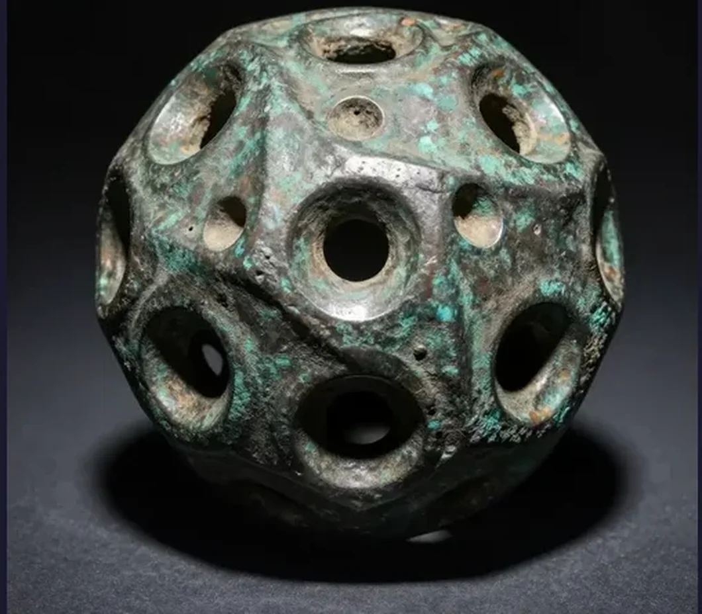

The Roman Dodecahedron: Ancient Mystery That Still Baffles Experts

It was the year 1739, in the English village of Aston, in Hertfordshire. A strange object was dug up from a field there. Nobody had seen anything like it before. It was found together with some Roman coins.
It was a small, hollow, twelve-sided shape made of bronze. Each flat face was a five-sided shape called a pentagon. Each face had a round hole, and the holes were different sizes. Small round knobs stuck out from every corner.
The object was clearly ancient, because a layer of age, called patina, covered its surface. It was also clearly made on purpose. Its exact shape could not have come from nature.
The object was shown to the Society of Antiquaries in London that year. The scholars there could not say what it was. No writing and no record gave any clue.
Since then, about 130 similar objects have been found across the lands of the old Roman Empire. They turned up in England, France, Belgium, Germany, the Netherlands, Luxembourg, Austria, Switzerland, and Hungary.
They are between 4 and 11 centimeters across. They weigh from 35 grams to 1 kilogram. They are made of a copper mix and were cast with the lost-wax method. All have twelve pentagon faces with round holes of different sizes, and small knobs at the corners. And nobody knows what they were used for.
The Roman dodecahedron is a puzzle of classical archaeology. Its mystery is not that it is strange or fantastic. It is almost the opposite. It is so ordinary.
These are bronze objects, made by skilled metalworkers. They were spread across one part of the Roman Empire over about three centuries. Someone made them. Someone used them. Some were kept with coins and other valuable things, and some were buried in graves.
And yet the Romans loved writing, record-keeping, and paperwork. No Roman text is known that says what these objects were for. The dodecahedrons sit in museum cases across Europe. They are silent and puzzling, daring scholars to crack their secret.
Every Roman dodecahedron has the same basic form. A regular dodecahedron is a shape with twelve flat faces. Each face is a perfect, or nearly perfect, pentagon.
Each face has a round hole cut in its center. The holes open into the hollow inside. At each of the twenty corners, a small ball-shaped knob sticks out. The result is beautiful. It looks like something from a math book, not from the ancient world.
The dodecahedron is one of the five Platonic solids. These are regular shapes described by the Greek thinker Plato in his book Timaeus, about 360 BCE. Plato linked the dodecahedron to the cosmos itself. He wrote that “the god used it for arranging the constellations on the whole heaven.”
The dodecahedrons are very alike, yet each one is a little different. They range in size from 4 to 11 centimeters. The holes range from 6 to 40 millimeters wide. The key point is that the hole sizes differ from one dodecahedron to the next. This has fed a lot of guessing about their purpose.
The outsides are neatly finished and were probably polished in Roman times. The insides are rough and unfinished.
Almost none has letters or numbers on it. Some show very little wear. So they may not have been used hard.
Where they were found is one of the most puzzling parts. About 130 have been found over a wide area of the old Roman Empire. They have turned up in towns, hoards, and graves.
But none has been found in Italy. They are mostly from northern Europe and Britain.
This pattern makes some explanations less likely. If they were standard Roman army equipment, we might find them everywhere in the Empire.
They appear mostly in the northwestern provinces, in places with Gallo-Roman culture. That is the mixed culture that grew up when Roman and local ways met. So the purpose may have been local.
Most finds come from Gaul, which is now France and Belgium, and from Britannia, which is now England. Others come from Germany and other lands along the Rhine.
Some were found with coins and other valuables. This suggests people treasured them. Some were found in graves.
Most date from the 2nd to the 4th century CE.
Scholars have offered more than fifty ideas. One idea is that they were candleholders. Wax was found in only one of them. And the different hole sizes make little sense for a candleholder.
Another idea is that they were tools for surveying, or for judging distances. The holes of different sizes would be peepholes for estimating distance. But this does not explain why each dodecahedron has its own pattern.
Some think they were religious objects. Plato linked the shape to the cosmos. But no Roman or Celtic religious practice is known to use twelve-sided objects.
Others say they were gaming dice, since a dodecahedron can be rolled. But no game with such dice is known from the Roman world.
A further idea is that they were tools for astronomy. A Dutch scientist, G.M.C. Wagemans, said they could help farmers pick the day to sow winter grain. This is appealing, but there is no solid proof.
Another idea is the knitting theory. It was suggested by Martin Hallett. It says the dodecahedrons were used to knit gloves.
Yarn would be fed through a hole and wrapped around the knobs. The different hole sizes would fit different thicknesses of yarn. The different sizes of dodecahedron would make gloves of different sizes.
Hallett tried it with a 3D-printed copy. But no proof shows that Romans knitted gloves this way. Other experts remain doubtful.
The most frustrating part may be the complete lack of writing about them. The Romans wrote a great deal. They wrote laws, army reports, engineering handbooks, religious texts, personal letters, graffiti, and shopping lists. Yet in all the Roman writing that survives, not one word describes a dodecahedron. The silence is total.
There are several ideas about why. Maybe nobody thought to write about them. Maybe the knowledge was spoken, not written, and passed on by training. Maybe their purpose was secret or sacred and was kept out of the records on purpose. Or maybe the texts once existed and were lost. Most Roman writing has not survived.
In 2023, volunteers digging near Lincoln, England, found a new dodecahedron in a pit. It is about 8 centimeters across. The University of Lincoln made a 3D scan of it. Tests are planned at Newcastle University.
The object is in excellent condition and shows no sign of wear. It is the first found in the English Midlands.
New finds and new tests may add clues. But they have not yet solved the puzzle.
The Roman dodecahedron reminds us that the past is not a puzzle to be solved. It is more like a landscape to be explored. We have about 130 of these objects, from about three centuries and several countries. We have exact measurements, chemical tests, 3D scans, and many years of scholars arguing.
Yet the main question, “What is it for?”, still has no answer. The people who made them lived, worked, loved, and died in the Roman provinces of Gaul and Britannia. They probably used these objects for reasons that were clear to them. Maybe the knowledge passed from hand to hand and was never written down.
Now we are left with the objects themselves. They are beautiful, puzzling, and silent. Perhaps their greatest gift is not the answer they hide. It is the curiosity they spark. Even in an age of satellites and supercomputers, the ancient world can still make us say: “We don’t know.”
References & Further Reading
Wikipedia: Platonic solid — Plato's remark in the Timaeus about the dodecahedron
Editorial note: Nobody knows what the Roman dodecahedrons were for, and no Roman text explains them. Many ideas have been tried, but none has been proved. See our Editorial Policy.